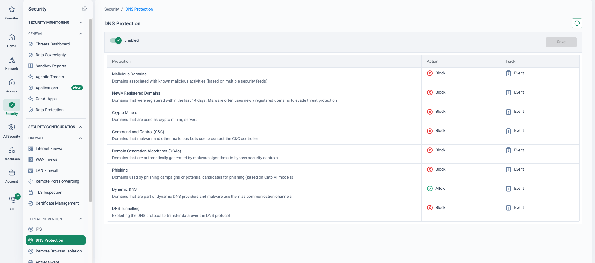

The multi-console problem
Almost no Cisco account runs one product. The typical estate combines Umbrella (its own dashboard, plus virtual appliances on-prem for internal-domain DNS), AnyConnect / Cisco Secure Client terminating on ASA or Firepower headends, Catalyst SD-WAN (Viptela) with the vManage/vSmart/vBond controller stack or Meraki MX with Auto-VPN, ASA/FTD firewalls managed from ASDM, FMC or CDO, and ISE for NAC and VPN posture. Each element carries a separate console, licence model and renewal date — and a separate operational skill set.
Cisco itself is consolidating around the customer: vManage was renamed Catalyst SD-WAN Manager, Umbrella capabilities are being folded into Cisco Secure Access, and Meraki has its own SSE integration path. Customers describe genuine roadmap uncertainty across the overlapping offers — and Secure Access adds yet another console (Security Cloud Control) during any transition.
The objective of this migration is convergence: Sockets on the WAN edge, the global private backbone as the middle mile, and FWaaS, SWG, DNS security, ZTNA, CASB and DLP delivered inline at the PoP — all managed from the Cato Management Application. One platform, one policy model, one renewal.
Cisco’s own calendar sets the timeline
You do not need FUD to create urgency in these accounts — Cisco has already published the dates, and two of the headline ones have already passed: ASA 5506-X / 5508-X / 5516-X support ended on 31 August 2026 and Umbrella’s legacy SKUs left software maintenance on 30 September 2026. Each milestone below is a forced project inside the Cisco portfolio: new client software, new routers, new firewalls or a new SSE subscription, each with migration effort of its own.
| Cisco product | Milestone | Date | Cisco’s landing zone |
|---|---|---|---|
| AnyConnect 4.x | End of software maintenance | 31 Mar 2024 | Secure Client 5.x (free for entitled customers) |
| Umbrella Roaming Client (standalone) | End of support | 2 Apr 2025 | Secure Client — Umbrella Roaming Security module |
| Umbrella legacy SKUs (Roaming, Professional, Branch, Insights/Platform, Cloud Security) | End of sale | 30 Sep 2025 | Cisco Secure Access |
| vEdge 100B / 100M / 1000 | Support milestones run out | Jan 2026 | Catalyst 8000 (cEdge) |
| Meraki MX65 / 65W | End of support | 28 May 2026 | MX67 / 68 |
| ASA 5506-X / 5508-X / 5516-X | End of support | 31 Aug 2026 | Firepower 1000 / 3100 |
| Umbrella legacy SKUs | End of software maintenance | 30 Sep 2026 (TAC to 30 Sep 2030) | — |
| Umbrella SIG and DNS (current tiers, announced 1 Sep 2026) | End of sale and of software maintenance | 31 Jan 2027 (renewals to 31 Jan 2028; last support 31 Jan 2029) | Cisco Secure Access |
| AnyConnect 4.x | End of support | 31 Mar 2027 | — |
| Meraki MX64 / 64W | End of support | 26 Jul 2027 | MX67 / 68 |
Be honest in the room: none of this makes Umbrella stop working tomorrow — legacy SKUs keep TAC support to 2030, and a well-run Viptela estate will carry on routing. The argument is the calendar. If the customer must re-plan, re-licence and re-deploy anyway, the incremental cost of evaluating a platform change is low — and the end state removes the multi-console estate instead of modernising each silo separately.
“Map your Cisco renewal and end-of-life dates over the next 18 months — how many separate migrations has the portfolio already booked for you, and how many consoles do they land in?”
Component-by-component mapping
The conversion is review-and-map, not lift-and-shift: rule bases shrink when separate DNS, web and firewall policies collapse into one inspection engine at the PoP. This is where years of accumulated Umbrella destination lists and ASA rules get cleaned up rather than copied across.
| Cisco component | Cato equivalent | Migration note |
|---|---|---|
| Umbrella DNS Security (Essentials / Advantage) | Cato DNS Security (DNS Protections in IPS) + Internet firewall categories | All DNS traffic is inspected inline at the PoP regardless of resolver. |
| Umbrella SIG (SWG, cloud firewall, CASB, DLP) | Cato SWG / Internet firewall, CASB, DLP, TLS Inspection | One rule base — and no IPsec/GRE backhaul to a security cloud; sites are already on Cato tunnels. |
| Umbrella virtual appliances | Not required | Internal DNS stays on AD/Infoblox; Cato sees real source IPs natively over the tunnel. |
| AnyConnect / Secure Client VPN + ASA/FTD headends | Cato Client (SDP/ZTNA) + clientless browser access | No concentrators — users connect to the nearest PoP with the same inspection stack as sites. |
| Secure Client — ISE Posture module | Device Posture profiles + Client Connectivity Policy | Continuous posture checks throughout the session, not just at logon. |
| Umbrella Roaming Security module | Cato Client | One agent replaces the VPN + roaming-security module pair. |
| Catalyst SD-WAN — vEdge/cEdge + vManage/vSmart/vBond (OMP/TLOC) | Cato Socket + global private backbone | No customer-managed controllers; OMP route/TLOC state becomes Cato cloud routing + BGP at the edges. |
| Meraki MX + Auto-VPN | Cato Socket + backbone | Auto-VPN hub/spoke and hub-priority logic replaced by PoP-based any-to-any connectivity. |
| ASA/FTD branch and edge firewalls | Cato FWaaS: Internet + WAN firewall, IPS, anti-malware | Removes the appliance refresh and patching cycle; DC firewalls are often retained initially for local segmentation. |
| ISE (802.1X wired NAC, RADIUS) | Retained | Cato covers user and device posture for Cato-delivered access; wired port NAC stays with ISE — LAN infrastructure, out of SASE scope. |
| Umbrella dashboard · vManage · Meraki Dashboard · ASDM/FMC/CDO | Cato Management Application (CMA) | One console for networking, security, access and analytics; the Meraki Dashboard survives only where MS/MR LAN kit stays. |
| Talos intelligence | Cato threat intelligence (~250 ingested feeds) + Cato CTRL | Applied inline at the PoP for all customers — no signature or appliance updates to manage. |
Five phases from multi-console Cisco to one platform
This page is authored from vendor documentation and Cato PS methodology research; it is not a delivery-verified runbook. Review the design — especially the interconnect, redistribution and rollback details — with Cato Professional Services before committing it to a customer plan.
The arc follows the Cato PS methodology — Export → Review & Map → Deploy → Optimise — applied per estate component, inside a discovery → co-existence → pilot → wave-cutover → decommission programme.
-
Phase 1 — Discovery and design
Inventory the whole estate: sites, links and bandwidths; the Viptela topology (hub/spoke regions, OMP/TLOC design, app-route SLA policies buried in vManage templates); Meraki Auto-VPN hubs and spoke modes (split vs full tunnel); the Umbrella policy set (identities, destination lists, content categories, selective-decryption lists); AnyConnect tunnel-groups with their SAML/ISE dependencies; and the ASA/FTD rule bases.
Capture the business intent hidden in vManage centralised policy and Meraki templates before anything is decommissioned — that is the app-priority and SLA design Cato must reproduce. Map licence co-termination dates (Cisco EA/DNA, Meraki co-term, Umbrella renewal) to build the migration calendar around the bargaining position each renewal creates, and agree success criteria and rollback rules per phase.
-
Phase 2 — Co-existence foundation: regional interconnect hubs
Network → Sites
Stand up the Cato account: admin model, IdP SSO and SCIM provisioning (Entra ID / Okta), and a base policy from Cato best-practice templates. Then build the co-existence fabric: regional Cato interconnect hubs with an eBGP handoff to each region’s Viptela or Meraki hub, keeping traffic symmetric per region.
At the Viptela hub, redistribute OMP ↔ BGP so legacy-spoke routes reach Cato and Cato-site routes propagate into the overlay. Meraki MX dynamic routing is limited — anchor the handoff at the L3 core switch or firewall behind the MX, not the MX itself. Filter the default route and parallel-site prefixes at the interconnect, and use Cato’s reserved BGP communities to keep migration routes isolated where needed.
-
Phase 3 — Pilot in parallel
Security → Internet Firewall
Pick one to three low-risk, representative sites. Sockets ship zero-touch and self-provision from the Cato Cloud; connect them in parallel (transit VLAN or L3-switch / firewall handoff) and move a subnet at a time, validating WAN paths, internet breakout, voice — and the rollback. Pilot a small user cohort on the Cato Client via MDM, split-tunnel first, alongside the incumbent Secure Client.
For policy: export Umbrella destination lists to CSV (dashboard download or the Destination Lists API), map content categories and block/allow lists to Cato system categories, custom categories and Internet firewall rules, and recreate DNS-layer controls in DNS Protections. Stage TLS Inspection and IPS in monitor mode before enforcing anything.
-
Phase 4 — Wave cutover: sites, then users, then DNS
Access → Client Connectivity Policy
Sites move in regional waves, keeping each region’s legacy hub as the interconnect until the region completes. Per site: pre-stage the Socket → move the LAN VLANs or default gateway → disable the legacy spoke — OMP withdraws its routes automatically (Meraki: remove the spoke from Auto-VPN) — Cato propagates the prefixes via BGP at the interconnect → validate, then soak with the legacy CPE left racked and configured. Rollback is the mirror image: re-enable the spoke and routing re-converges. Move each site’s Umbrella web/DNS policy to Cato in the same change window — Umbrella network identities are keyed to the site’s public egress IP, which changes to a shared Cato PoP address the moment the Socket goes live. Re-point third-party allowlists keyed to old egress IPs per wave.
Users follow as AnyConnect → Cato Client cohorts: split-tunnel with the incumbent VPN still available, validate the cohort’s apps, then remove the VPN profile and switch always-on with Client Connectivity Policy and Device Posture profiles recreating the ISE posture rules. DNS cuts over in strict order: sites first, roaming users next (the Client supersedes the Umbrella module), then re-point internal DNS forwarders away from the Umbrella virtual appliances and retire the VAs last — internal-domain handling stays on AD DNS throughout.
-
Phase 5 — Optimise, then decommission in order
Monitor → Events
Tune policy from real events: tighten monitor-mode rules to block, widen TLS Inspection scope, refine app and bandwidth priorities on the backbone. Decommission in sequence — legacy spokes → regional hubs and interconnects → vManage/vSmart/vBond controllers → ASA/FTD headends → Umbrella tenancy at renewal (once event parity is confirmed in CMA) → Meraki MX licences at co-term. Retain ISE for wired NAC and Meraki MS/MR for the LAN where they remain in scope.
Two overlays, one region at a time
Asymmetry is the enemy. With two overlays joined in more than one place, a flow can exit through one region’s hub and return through another — breaking stateful inspection and dropping traffic. The preferred pattern is regional interconnect hubs with eBGP and AS-path anchoring: cross-region routes carry a longer AS-PATH (the extra inter-hub hop), so each side always prefers its local regional hub — symmetric by construction, with automatic route withdrawal on spoke cutover and simple rollback. It is the same pattern Cato PS has deployed against FortiGate hub estates, applied unchanged to Viptela hubs via OMP ↔ BGP redistribution and to Meraki hub sites via the L3 core.
Symmetric by construction
AS-path anchoring makes each side prefer its local regional hub — no stateful-inspection breakage from cross-region return paths.
Reversible per site
Cutover is a routing event: disable the spoke and OMP/BGP withdraws the routes; re-enable it and everything converges back.
No protection gap
Umbrella keeps covering un-migrated sites and users throughout — nothing about the Cato rollout breaks it while egress IPs are unchanged.
One policy at the end
Every wave retires a console. The finish line is a single rule base in CMA for DNS, web, WAN and remote access.
If eBGP at the hub is not possible
- Parallel connectivity at every site — cleanest, but practical only below roughly 20 sites
- A single interconnect hub — accept the hairpin latency and migrate one region at a time
- NAT/PAT at the boundary to force symmetry — low cross-region volumes only; breaks IP-embedding protocols such as LDAP and WMI
- Customer-managed PBR over GRE/IPsec — complex, generally avoided
Umbrella during the transition
- Virtual appliances stay until the final DNS repoint — they forward internal domains independently of the WAN path
- Watch the egress-IP dependency: a site behind Cato no longer matches its Umbrella network identity — move that site’s policy at swap time, not later
- Existing firewall IPsec/GRE tunnels into Umbrella SIG can keep running in parallel while WAN traffic moves to Cato
- Let the subscription lapse at renewal once event parity is confirmed in CMA
Rollback rules — agree them before wave one
Sites
Legacy CPE stays racked, powered and configured through an agreed soak window. Rollback = re-enable the spoke; BGP/OMP re-converges automatically.
Users
Rollback = re-enable the AnyConnect profile via MDM. Keep the ASA/FTD headends licensed until the final cohort clears its soak window.
DNS
Keep the Umbrella VAs and tenancy alive until after the last forwarder repoint — rollback is a forwarder change, nothing more.
What bites, and what they’ll say
EIGRP / OSPF meets BGP
Cato’s dynamic routing integration is BGP, and Cisco shops frequently run EIGRP or OSPF in the campus and DC. Plan EIGRP/OSPF ↔ BGP redistribution at the handoff device (or static routes for smaller sites) — and watch administrative-distance and metric-seeding quirks when routes re-enter the IGP.
Meraki is a full-stack dependency
MS switches and MR access points share the MX’s Dashboard and licensing — replacing the MX does not remove either. Scope it as “WAN + security to Cato, Meraki LAN retained”, check co-termination impact, and never plan eBGP on the MX itself — anchor the handoff at the L3 core. Cato’s Meraki Experience Monitoring integration (announced Oct 2025) gives LAN visibility from CMA.
AnyConnect can override Cato Client DNS
Cato documents this conflict directly — and running the Cato Client full-tunnel alongside a third-party VPN is not recommended. Sequence the dual-agent phase: Secure Client for VPN only while the Cato Client runs split-tunnel, or move remote access to Cato first and leave only the Umbrella module until web parity. Audit what is actually installed per cohort first — many estates mix the EOS standalone Roaming Client, the Secure Client module and AnyConnect VPN. Prove it in the pilot.
SAML and ISE posture re-mapping
AnyConnect SAML is configured per tunnel-group on the ASA/FTD — recreate it as Cato IdP SSO (Entra ID, Okta, OneLogin; multiple IdPs supported) with SCIM keeping groups in sync. ISE posture rules map to Device Posture + Client Connectivity Policy — but wired 802.1X, RADIUS CoA and switch-port enforcement stay with ISE. Set that expectation in week one, not in the eleventh hour.
Umbrella’s policy model is not Cato’s
Umbrella evaluates identity precedence (roaming > AD user/group > internal network > network); Cato is an ordered rule base with users, groups and sites as sources. Selective-decryption lists become TLS Inspection rules. Verify niche behaviours — block-page bypass codes, for one — during Review & Map rather than assuming 1:1 parity. And inventory everything keyed to office egress IPs (SaaS allowlists, partner firewalls) in discovery.
“We’ll just move to Secure Access”
A fair objection — with three counters. That path is itself a migration (new SKUs, new console, an agent swap, a router refresh), not a renewal. It preserves the multi-product estate — SD-WAN, SSE, firewalls and NAC remain separate stacks. And Cato collapses the same scope into one platform and one policy model, with the co-existence patterns above de-risking the transition.
How to prove it in the customer’s tenant
A Cisco estate is three planes — a DNS/web policy plane in Umbrella, a remote-access plane on AnyConnect, and a WAN plane on Meraki or Catalyst SD-WAN — so the PoV pilots each plane in a bounded way rather than boiling the estate: one Umbrella policy slice translated to Cato at parity, monitor-first; one AnyConnect cohort on the Cato Client with posture and always-on; and one branch in eBGP-hub co-existence with the legacy overlay. Each plane keeps its own rollback lever — a DNS re-point, an MDM profile re-push, a BGP withdrawal — and each rollback is rehearsed on purpose before anyone asks. Run it inside the frame from Running a Cato PoV: agree the success criteria below with the customer before anything is configured, and book the decision meeting at the same workshop.
Success criteria
| # | Criterion — what we demonstrate | Evidence artefact | Where it lives in the CMA |
|---|---|---|---|
| 1 | The Umbrella slice — one destination-list pair, the pilot population’s category settings and the DNS-layer protections — runs at parity on Cato, monitor-first | Rule-hit events per translated rule and DNS Protection events, compared against Umbrella’s activity reports for the same flows; every delta triaged and explained | Monitor → Events and Security → Internet Firewall |
| 2 | The AnyConnect pilot cohort works a full week on the Cato Client — posture evaluated continuously, always-on enforced, apps behind un-migrated sites reachable | Experience Monitoring scores for the cohort across the week; posture verdicts and connection events; no unresolved helpdesk tickets from the group | Monitor → Experience Monitoring (Remote Users) and Monitor → Events |
| 3 | The pilot branch, cut to a Cato Socket, reaches un-migrated overlay sites through the eBGP hub handoff — and they reach it back | BGP neighbour Established with learned routes captured on both sides (Show BGP Status plus the legacy hub’s routing table), and bidirectional reachability tests | Network → Sites → «hub-site» → Site Settings → BGP and Network → Routing Table |
| 4 | Rollback is real on every plane: DNS re-pointed to Umbrella, the AnyConnect profile re-pushed via MDM, the branch withdrawn over BGP — each rehearsed and timed | Timestamped before / during / after captures per plane, and a continuous ping across the branch reversion showing convergence time | Network → Routing Table and Monitor → Events |
| 5 | Convergence is visible: events from all three planes land in one feed, attributed to user, site and rule — the multi-console problem, closed on screen | A single Events export filtered per plane, shown to the sponsor from one console next to today’s four dashboards | Monitor → Events |
- Two Sockets shipped: one for the regional interconnect hub (in parallel with the legacy hub) and one for the pilot branch. BGP filtering on Socket sites needs Socket v21.1+. Where the WAN plane is ASA-fronted branches rather than an SD-WAN overlay, run the branch plane over interim ASA IPsec to the PoP instead — the full design is IPsec Site Design: Cisco ASA.
- A spare routed interface (or 802.1Q sub-interface) at the handoff device — the Viptela hub cEdge, or the L3 core switch behind a Meraki MX (never the MX itself) — plus an agreed transit VLAN and /29. Private ASNs agreed: Cato’s default is 64515 and Cato is eBGP-only, so the Cisco side must differ.
- Trial licences for every capability under test. DNS Protections come with the IPS licence — no separate SKU — and Experience Monitoring’s DEM drill-downs need the DEM licence.
- IdP SSO and SCIM live for the pilot cohort, and MDM able to remove the AnyConnect VPN profile and deploy the Cato Client in one change window — the cohort swaps clients, it does not dual-run (see AnyConnect to Cato Client for the full play).
- The Umbrella artefacts in hand before the build: destination lists to CSV (dashboard download or the Destination Lists API), the category settings from a policy walk-through, and the Umbrella activity reports that will serve as the parity baseline.
- If web-policy parity is to be judged beyond domain/SNI, stage TLS inspection first — Cato certificate pushed to the cohort via MDM in advance (see TLS Inspection: Staged Rollout Playbook).
- Change windows booked for the branch cutover and for the deliberate three-plane rollback rehearsal.
Configuration walkthrough
-
Freeze the slices — one per plane, in writing
Bound each pilot at the workshop: which destination lists and categories, which cohort (a department of 20–50 users with a known app list), which branch. Everything else is parked on the next-steps register. The Umbrella slice must belong to the pilot site and cohort — remember the egress-IP dependency from the co-existence section: the moment the Socket goes live, that site stops matching its Umbrella network identity, so its policy must move in the same window.
-
Translate the Umbrella slice — categories first, monitor everywhere
Security → Internet Firewall Security → DNS Protection
Dedupe the exported destination lists against Cato system categories, build custom categories (domains match subdomains; FQDNs are exact) for the survivors, and attach them to Internet firewall rules with Track = Event and block actions deferred. Recreate the DNS-layer controls in DNS Protections — eight protections including phishing, C&C and DNS tunnelling, enforced at the PoP whatever resolver the client uses; leave actions on Allow (monitor) for the PoV, and note Sinkhole as the end-state option for identifying infected hosts. The per-domain method and worked example are on Cisco Policy Migration.
-
Stand up the hub handoff — transit VLAN and eBGP
Network → Sites → «hub-site» → Site Settings → BGP
Cable the interconnect Socket’s LAN port to the hub switch, carry the transit VLAN to the cEdge (or the L3 core behind the Meraki MX), and create the BGP neighbour on the Cato site: defaults are metric 100, hold time 60 s, keep-alive 20 s (keep it at a third of hold time), with MD5 authentication supported. Advertise summary routes for the Cato side — Cato does not perform route summarisation for you, so define them explicitly. Then add BGP filtering on the neighbour: drop the default route and any parallel-site prefixes so no site is ever reachable via two paths at once — and do it in the build window, because every filter edit resets the BGP session immediately.
# Catalyst SD-WAN hub (cEdge, IOS-XE) — the other end of the handoff (illustrative) router bgp 65010 neighbor 10.255.99.1 remote-as 64515 # Socket IP on the transit VLAN · Cato default ASN address-family ipv4 unicast neighbor 10.255.99.1 activate redistribute omp # legacy-spoke routes → Cato sdwan omp address-family ipv4 advertise bgp # Cato-learned routes → the overlay # Verify: show ip bgp summary · show sdwan omp routes # Meraki estates: configure the same eBGP peering on the L3 core switch or # firewall behind the MX — MX dynamic routing is too limited to anchor the handoff.
-
Cut the pilot branch — and move its Umbrella policy in the same window
Network → Sites Monitor → Topology
Validate the exchange with a test prefix first, then run the spoke move: disable the branch’s cEdge spoke (OMP withdraws its routes; Meraki: remove the spoke from Auto-VPN), bring up the Socket site, and let routes propagate to both domains. Prove criterion 3 both ways — from the migrated branch to a host behind an un-migrated overlay site, and back. In the same window, the branch’s web and DNS policy switches from Umbrella to the monitor-mode Cato slice built in step 2; the Umbrella virtual appliances and internal AD DNS are untouched throughout.
-
Swap the pilot cohort onto the Cato Client — posture monitor-first
Access → Users Access → Device Posture Access → Client Connectivity Policy
One scripted MDM change per endpoint: remove the AnyConnect VPN profile, install the Cato Client, confirm enrolment — never two full-tunnel agents on one machine (AnyConnect can override the Cato Client’s DNS; the KB link is in Resources). Recreate the ISE posture rules as Device Posture profiles — anti-malware, disk encryption, OS version, device certificate among the eleven available checks, combined with AND logic — referenced from the Client Connectivity Policy in monitor posture first. Verify the cohort reaches apps behind un-migrated sites: that is the hub handoff proven from the user side.
-
Enforce always-on for the cohort
Access → Always-On Policy
Once the cohort’s first days are quiet, add an Always-On rule scoped to the pilot group (Windows, macOS, Android and iOS — not Linux), and show the admin-side one-time bypass passcode (valid up to 15 minutes) as the operational escape hatch. Client Connectivity Policy and device authentication take precedence over Always-On — a non-compliant device is refused, not silently tunnelled. This is the moment the pilot is demonstrably ahead of AnyConnect, not just level.
-
Rehearse all three rollbacks — deliberately, on camera
Network → Routing Table
In one change window, run the reversions as drills and time each. WAN: re-enable the legacy spoke and withdraw the branch from the Cato side — OMP/BGP re-converges with a continuous ping running (interim-IPsec variant: drop the tunnel and let the ASA’s original default route resume). Client: re-push the AnyConnect profile via MDM to one machine and watch it return to the headend. DNS/web: re-point the pilot site at Umbrella and confirm its network identity matches again. Then cut all three forward once more. Nothing on the Cisco side was decommissioned, so every reversion is minutes — that fact is the evidence.
What good output looks like



CurrentVersion — the same trick ISE compound conditions use). Checks AND together, so the profile is the compound condition.

Troubleshooting
Cohort endpoint misbehaving
First question: is AnyConnect still installed? Its VPN agent can override the Cato Client’s DNS settings, and dual full-tunnel agents are the documented unsupported case. The fix is the swap discipline from step 5 — profile removed, Client installed, one data path per endpoint — and the per-cohort rollback is the MDM re-push, not debugging cohabitation.
Umbrella “stopped working” for the pilot site
Expected, not a fault: behind the Socket the site egresses from a shared Cato PoP address and no longer matches its Umbrella network identity. Its policy is the Cato slice now — that is why step 4 moves it in the cutover window. Roaming-module users are unaffected until their cohort swaps; un-migrated sites keep matching Umbrella throughout.
BGP session up, routes missing
Check the neighbour’s accept/drop lists first — an over-broad filter silently eats prefixes, and every filter edit resets the session, so audit them in a window. Then check communities in Network → Routing Table: prefixes tagged <Cato ASN>:32768 stay local to the hub Socket and never reach the PoP — the pilot branch prefixes must not carry that tag. Meraki estates: confirm the peering really is on the L3 core, not the MX.
Overlay steering around the handoff
Traffic to the migrated branch still rides the old overlay: a vSmart centralised policy or app-route rule on an un-migrated cEdge still matches the branch prefix, or a Meraki hub-priority entry survives. Check show sdwan omp routes and the policy hit counters, retire stale entries for migrated prefixes, and confirm advertise bgp is actually propagating the Cato-learned routes into OMP.
Keep the parity comparison fair
Umbrella and Cato category taxonomies differ, and Cato’s single-pass engine inspects flows Umbrella never saw — so monitor-mode deltas split into taxonomy drift (map by intent, re-order rules) and coverage gained (new detections, not false positives). Judge web-policy parity beyond domain/SNI only after TLS inspection is staged, on either platform.
DNS Protections noisier than Umbrella
Protections such as Newly Registered Domains ship with defaults tuned to false-positive risk, and inline inspection at the PoP sees every resolver — including ones the Umbrella virtual appliances never fronted. Keep actions on Allow (monitor) for the PoV, triage the event stream weekly, and present Sinkhole as the end-state control for infected-host identification rather than enabling it mid-pilot.
Gotchas & exit
- One branch and one hub prove the pattern, not the estate. Multi-region AS-path symmetry, the full destination-list corpus, ISE’s wired-NAC scope and the DNS virtual-appliance retirement are project design work — park them on the next-steps register.
- Licence edges: DNS Protections ride the IPS licence, but the DEM drill-downs behind criterion 2 need the DEM licence, and the threat-prevention trial must be active before monitor-mode evidence can accumulate.
- Evidence outlives retention: export events, routing-table captures and Experience Monitoring views into the evidence doc weekly — do not rely on tenant retention windows at wrap-up.
- Umbrella stays live throughout: the tenancy, virtual appliances and roaming modules keep protecting everything outside the pilot — which is exactly what keeps all three rollback levers cheap.
Unwinding cleanly: if the PoV ends without a project, reverse in order — re-enable the branch’s spoke and confirm reachability (the rollback drill, one last time); re-push the AnyConnect profile to the cohort via MDM, then remove the Cato Client; re-point the pilot site’s DNS and web policy at Umbrella; disable or delete the monitor-mode rules, custom categories and posture profiles (they blocked nothing, so removal is invisible); delete the BGP neighbour and its filters, remove the transit VLAN, and recover both Sockets. The Cisco estate never depended on any of it — that is the point of the three-plane pattern.
Where this sits in the Cato SASE platform
- Regional Cato hubs peer over eBGP with each Viptela hub, or the L3 core behind a Meraki MX, for symmetry.
- Disabling a legacy spoke lets OMP withdraw its routes; re-enabling it is the rollback.
- Migrated sites get DNS and web security inline at the PoP, so Umbrella is bypassed.
- AnyConnect cohorts swap to the Cato Client and reach the nearest PoP with the same inspection stack.
Resources
Documentation
- Using BGP in the Cato Cloud (KB)
- Cato reserved BGP communities (KB)
- Customising DNS Protections for IPS (KB)
- Cato Client troubleshooting — third-party VPN conflicts (KB)
- AnyConnect 4.x end-of-life notice (Cisco)
- Umbrella to Secure Access migration (Cisco)
- Meraki end-of-life products and dates
- Umbrella / Cloud Security API docs (Cisco DevNet)